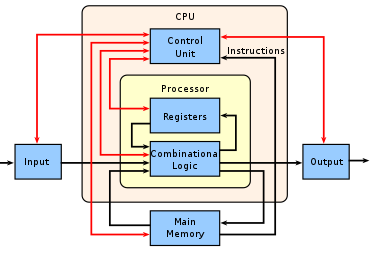

Een CPU (central processing unit) is een essentieel onderdeel van computers en elektronische apparaten. Het fungeert als het brein van je apparaat en is verantwoordelijk voor het verwerken en uitvoeren van instructies. Een CPU werkt samen met andere hardwarecomponenten, zoals het geheugen (RAM) en de grafische kaart. Het is een kritiek onderdeel dat berekeningen uitvoert op basis van de instructies die het ontvangt. Een CPU bestaat uit miljarden microscopisch kleine transistors die op een enkele computerchip zijn geplaatst. Deze transistors schakelen in en uit, waardoor ze “nullen en enen” overbrengen die worden omgezet in alles wat je met het apparaat doet. Dankzij voortdurende technologische vooruitgang zijn CPU’s steeds sneller geworden. Moderne apparaten, zoals sommige laptops en desktopcomputers, hebben nu CPU’s die meerdere taken voor het systeem uitvoeren via een zogeheten “System on a Chip” (SoC). Een voorbeeld hiervan is Apple’s M1-chip, die meerdere componenten integreert, zoals de CPU, GPU, RAM en meer. In eenvoudige bewoordingen haalt een CPU instructies op van het geheugen (RAM), decodeert deze instructies en voert ze vervolgens uit door de relevante onderdelen van de CPU te gebruiken1. Dit proces omvat drie fasen: ophalen, decoderen en uitvoeren.
